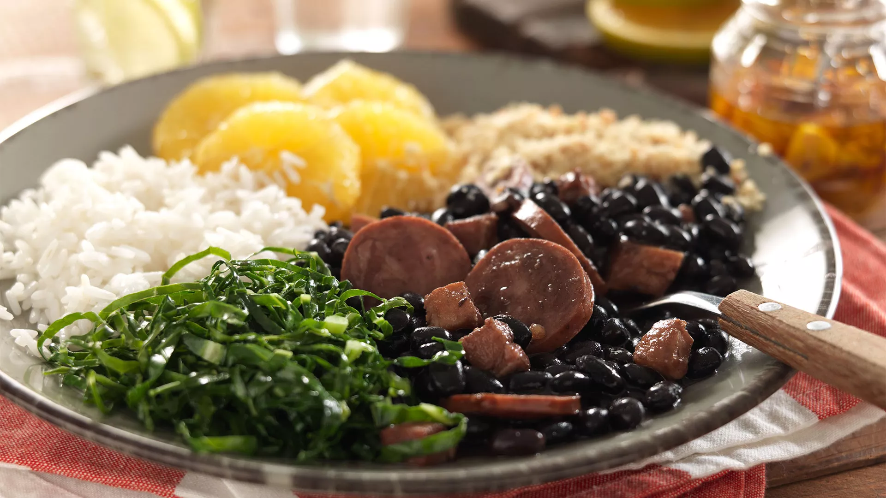

CONHEÇA MAIS SOBRE:
OS PRATOS TÍPICOS DA REGIÃO SUDESTE

Feijoada
Rio de Janeiro
Feijoada
Ingredientes
- Feijão-preto
- Carne-seca
- Linguiça
- Costelinha
- Bacon
- Alho e cebola
- Folha de louro
Modo de preparo
- Cozinhe o feijão.
- Cozinhe as carnes separadamente, se necessário.
- Refogue alho e cebola.
- Junte tudo ao feijão.
- Cozinhe até o caldo engrossar.
- Sirva com arroz, couve e farofa.
Importância: A feijoada tornou-se um dos pratos mais conhecidos do Brasil. Sua formação envolve diferentes tradições culinárias, especialmente influências africanas e portuguesas.

Pão de Queijo
Minas Gerais
Pão de Queijo
Ingredientes
- Polvilho
- Queijo
- Leite
- Ovos
- Óleo
- Sal
Modo de preparo
- Aqueça o leite com o óleo.
- Misture ao polvilho.
- Acrescente os ovos e o queijo.
- Faça pequenas bolas.
- Asse até dourar.
Importância: O pão de queijo é um dos maiores símbolos da culinária mineira. Sua tradição está ligada à produção de queijos e ao uso do polvilho de mandioca, tornando-se posteriormente conhecido em todo o Brasil.
Feijão Tropeiro
Minas Gerais
Feijão Tropeiro
Ingredientes
- Feijão cozido
- Farinha de mandioca
- Bacon
- Linguiça
- Ovos
- Couve
- Alho e cebola
Modo de preparo
- Frite o bacon e a linguiça.
- Refogue alho e cebola.
- Acrescente o feijão.
- Misture os ovos e a couve.
- Adicione a farinha aos poucos.
Importância: O prato está associado aos tropeiros, que precisavam de refeições práticas e energéticas durante longas viagens. A tradição foi incorporada à culinária mineira.

Moqueca Capixaba
Espírito Santo
Moqueca Capixaba
Ingredientes
- Peixe
- Tomate
- Cebola
- Pimentão
- Coentro
- Alho
- Limão
- Azeite
- Sal
Modo de preparo
- Tempere o peixe com limão e sal.
- Refogue os temperos.
- Monte camadas de peixe, tomate, cebola e pimentão.
- Cozinhe até o peixe ficar macio.
- Finalize com coentro.
Importância: A moqueca capixaba possui características próprias e tradicionalmente não utiliza dendê nem leite de coco. Sua formação recebeu influências indígenas, portuguesas e africanas.
Virado à Paulista
São Paulo
Virado à Paulista
Ingredientes
- Feijão
- Farinha de milho
- Arroz
- Bisteca
- Couve
- Ovo
- Banana
- Linguiça
Modo de preparo
- Prepare o feijão e misture com a farinha.
- Frite a bisteca e a linguiça.
- Refogue a couve.
- Frite o ovo e a banana.
- Sirva tudo junto com arroz.
Importância: O virado está ligado à alimentação dos paulistas e às tradições rurais e de deslocamento pelo interior de São Paulo.
Tutu de Feijão
Minas Gerais
Tutu de Feijão
Ingredientes
- Feijão cozido
- Farinha de mandioca ou milho
- Alho
- Cebola
- Bacon ou linguiça
- Sal
Modo de preparo
- Bata ou amasse o feijão.
- Refogue alho, cebola e bacon.
- Acrescente o feijão.
- Adicione a farinha aos poucos.
- Mexa até ficar cremoso.
Importância: O tutu é associado à cozinha mineira e às refeições simples feitas com ingredientes disponíveis nas propriedades rurais.